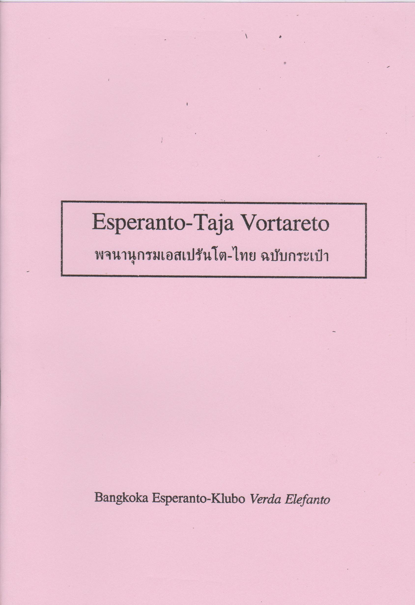
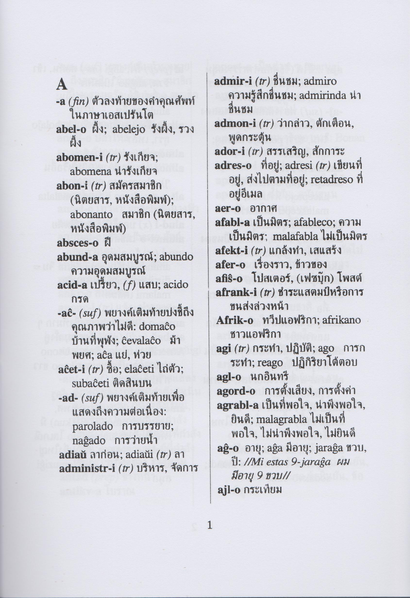

พจนานุกรมเอสเปรันโต-ไทย เรียบเรียงโดยวรุฒ บุญประเสริฐ
ประวัติ
เริ่มเรียบเรียงพจนานุกรมตั้งแต่ปี 2016 โดยเริ่มจาก รายการหน่วยคำ (morfemoj) ที่ใช้บ่อย ของ Zlatko Tišljar มีจุดประสงค์เพื่อรวบรวมคำศัพท์ที่จำเป็นต่อเรียนภาษาเอสเปรันโตในระยะเริ่มแรกสำหรับผู่ที่ไม่สันทัดการใช้พจนานุกรมเอสเปรันโต-อังกฤษ
 
เวอร์ชันออนไลน์ พจนานุกรมเอสเปรันโต-ไทย ฉบับเบื้องต้น
ดาวน์โหลด
ดาวน์โหลดไฟล์พจนานุกรมเอสเปรันโต-ไทย เรียบเรียงโดยวรุฒ บุญประเสริฐ สำหรับโปรแกรมที่สามารถใช้ไฟล์ของ StarDict ได้ (แอปแอนดรอยด์ ColorDict, GoldenDict, SprintDict, QDict, AIpus)
1. รุ่น 0.01 (06-04-2019) 1,717 คำหลัก (รุ่นทดลอง)
License

ผลงานนี้ ใช้สัญญาอนุญาตของครีเอทีฟคอมมอนส์แบบ แสดงที่มา 4.0 International.
เป้าหมายต่อ
1. เพิ่มเติมคำศัพท์ให้ได้ 2,500 คำหลัก และเพิ่มคำรอง (kunmetitaj vortoj) ที่จำเป็น ๆ
2. สร้างไฟล์สำหรับโปรแกรม DictionaryForMIDs
เว็บไซต์เพิ่มเติม
1. ดาวน์โหลด StarDict 3.0.6
2. Notes about StarDict dictionary format
3. Thai dictionaries for - Lingvo & StarDict - Тайские словари для Лингво & Стардикт